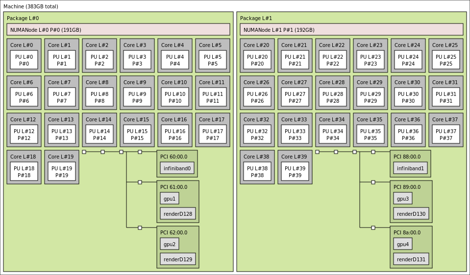

Understanding Puhti GPU nodes¶
Questions
What hardware is available on Puhti’s GPU nodes?
How do we organize computational work to go where it should?
Objectives
Understand that the time to transfer data between compute units is finite
Understand that managing the locality of data (and the tasks that use them) is critical for performance
Trends in HPC hardware in 2021¶
Most of the compute performance in new clusters and supercomputers will be made available in the form of GPUs that accompany the CPUs. Many applications, including GROMACS, have been ported to run on GPUs. The dominant GPU vendor in HPC is Nvidia, and their CUDA programming framework is close to ubiquitous in HPC applications like GROMACS. Recently, AMD and Intel have both won major contracts around the world to deliver GPU-enabled machines, so the future will be interesting.
All such machines have the same general characteristics. There are many CPU cores, perhaps separated into a few sockets. There are a handful of GPUs, each with thousands of cores less powerful than the CPU cores. The GPUs are able to transfer data to nearby parts of the CPU, or to other GPUs.
Puhti GPU nodes¶
In this workshop we will focus on the GPU nodes of the supercomputer Puhti, located at CSC in Finland (see https://docs.csc.fi/computing/overview/). It has 80 nodes with GPUs, and there are 4 GPUs on each node. Like nearly all modern hardware, it is built around the notion of non-uniform memory access (NUMA). Some parts of the memory are closer to a particular core than any other. To get best performance, users and programmers need to make sure that tasks are allocated to cores and GPUs that prefer the same memory.

Slightly simplified output of lstopo on a Puhti GPU node. The
40 cores and 4 gpus are divided evenly across 2 sockets. Compute
resources in one socket are closer together than they are to
resources in the other socket.¶
Solution
Cores 20-39 in NUMANode 1 would prefer to use different memory than
gpu2. Data transfer will be less efficient.
Running jobs on Puhti¶
When requesting GPU nodes on Puhti, a number of CPUs and GPUs are requested. The SLURM job scheduler is capable of quite complex assignments, but today we’ll keep it simple and focus solely on jobs that have one or more GPUs and matching groups of 10 CPU cores.
For example (adapted from https://docs.csc.fi/computing/running/example-job-scripts-puhti/#single-gpu) to get a single GPU, 10 nearby CPU cores and some memory for 20 minutes using the project for this workshop, we could use a job script like
#!/bin/bash
#SBATCH --job-name=gromacs
#SBATCH --account=project_2000745
#SBATCH --reservation=gromacs
#SBATCH --partition=gpu
#SBATCH --gres=gpu:v100:1
#SBATCH --ntasks=1
#SBATCH --cpus-per-task=10
#SBATCH --mem-per-cpu=8000
#SBATCH --time=00:20:00
export OMP_NUM_THREADS=$SLURM_CPUS_PER_TASK
module load gcc/9.1.0 hpcx-mpi/2.4.0 gromacs/2020.4-cuda
srun gmx_mpi mdrun
If that was in a file run-script.sh then we can submit it to the
Puhti batch queue with sbatch run-script.sh. For this workshop,
that will start quickly because we have a dedicated reservation.
See also¶
Keypoints
HPC nodes have internal structure that affects performance
Expect to see many clusters that have multiple GPUs per node